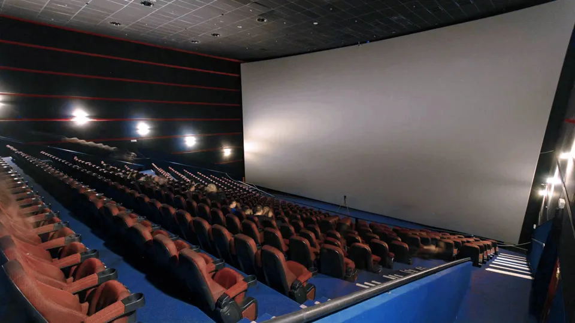
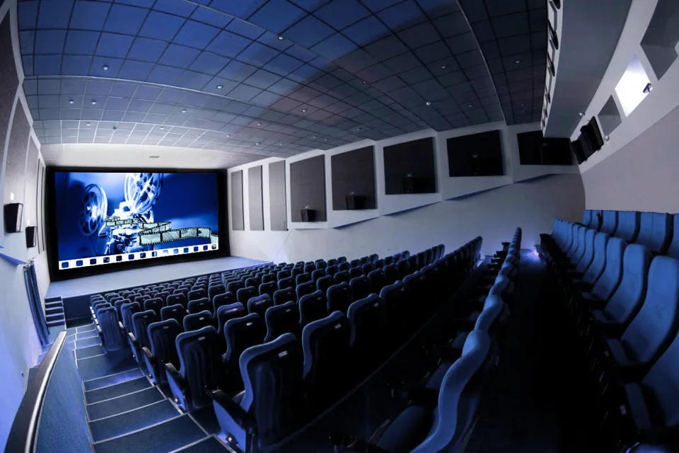

Составьте расписание
Задайте время показов в личном кабинете. Ваш зал работает по вашему графику.
ТЕХНОЛОГИИ, КОТОРЫЕ ОБЪЕДИНЯЮТ
Автоматизируйте кинопоказы — от загрузки фильма до последнего кадра. Система «Луч» возьмёт рутину на себя.
Для некоммерческих показов с бесплатным входом
01 / О СИСТЕМЕ
Одна система связывает расписание, контент и оборудование зала. Чтобы каждый сеанс начинался вовремя.
Задайте время показов в личном кабинете. Ваш зал работает по вашему графику.
Фильмы поступают абонентам системы автоматически — без ручного переноса файлов.
Система управляет показом и подключённым оборудованием без постоянного участия оператора.

02 / ОБОРУДОВАНИЕ
Подбираем конфигурацию под размеры зала и задачи заказчика. Все компоненты работают вместе.
Единая система управления вашим залом
Центр управления контентом и расписанием.
Подбирается с учётом размера экрана.
Звуковое сопровождение каждого показа.
Управление светом в сценарии сеанса.

ВАШ ЗАЛ. ВАШЕ РАСПИСАНИЕ.03 / УСТАНОВКА
Мы собираем систему под ваше пространство — от небольшого зрительного зала до полноценного кинотеатра.
ПОЛЕЗНО ЗНАТЬ
Система предназначена для некоммерческих кинопоказов с бесплатным входом.
Заказчик задаёт расписание в предоставленном личном кабинете. Система запускает показы по этому графику.
Конфигурация учитывает необходимые функции: затемнение зала, управление занавесом и моторизованным экраном. Возможности подключения обсуждаются при подборе системы.
Контент загружается абонентам автоматически. Также помогаем заказчику самостоятельно приобрести фильмы у российских дистрибьюторов. Условия предоставления фильмов уточняются при обращении.
04 / ДАВАЙТЕ ОБСУДИМ
Расскажите о вашем зале. Обсудим задачи,
оборудование и условия установки.
Подготовьте письмо о вашем зале.
Отправьте его через своё почтовое приложение.
Данные не сохраняются на сайте. Письмо отправляете вы в своём почтовом приложении.